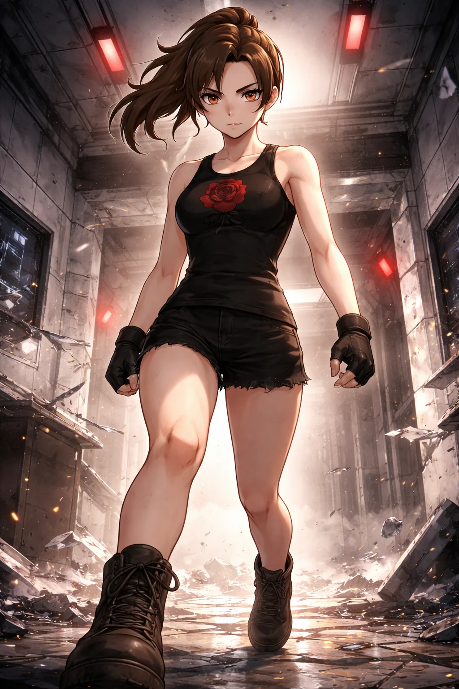

CHARACTER FILE

ブラッディローズ
Bloody Rose
『血塗られた薔薇、その美は死を呼ぶ』
基本情報
- 年齢
- 不明
- 体格
- 166cm／引き締まったしなやか体型
特性
ローズ・コンプレッション全身の肌に、肉眼では見えないほど微細な棘をまとう特性。触れた相手の筋肉や神経に鋭い刺激を与え、強い痛みと一瞬の硬直を引き起こす。軽く触れただけのように見えても、相手の体には棘が食い込むような違和感が残り、動きは少しずつ鈍っていく。
超必殺技
ブラッディ・ペタル見えない棘で相手の動きを少しずつ乱したあと、回転を加えた強烈な踵落としを叩き込む超必殺技。硬直しかけた体へ正確に振り下ろされる一撃は、避けることも受け切ることも許さない。着弾の瞬間、赤いリボンが空中に舞い上がり、血しぶきのような残像を描く。最後は静かに一礼し、美しさと恐ろしさの両方を刻みつける。
性格
常に微笑みを浮かべながらも内面は冷酷。敵の悲鳴すら美学と捉え、情け容赦なく追い詰める戦士。観客には優雅に振る舞うが、リング上では徹底的に非情。
ファイトスタイル
ダンスのような優雅なムーブの裏に隠された、的確で痛みを伴う一撃。相手の精神と肉体をじわじわと削り、意識とプライドを奪う戦術を得意とする。
相性
- 有利な相手
- 精神的に脆い相手、防御中心タイプ
- 不利な相手
- 一撃必殺型ファイター、耐久力重視タイプ
プロフィール
真紅と黒を纏い、花のように舞い、刃のように散る。かつて「美の再現」を目的とした実験過程で生み出された彼女。──ある日、ふと目にした研究員の襟元の“薔薇の刺繍”に心を奪われた。 その直後、「もっと見たい」と願い、無表情のまま襟ごと引き裂いた。この異常行動により“処分対象”とされるも、生き延びた彼女は、静かな怒りと美への執着を胸に、ディストーションドールズとしてリングへと舞い戻る。 華麗な一挙手一投足は、緋色のバレエ。観客は目を奪われ、敵は静かに沈んでいく。微笑なき薔薇は、今日もリングを染め上げる。
口癖
「それちょうだい。」